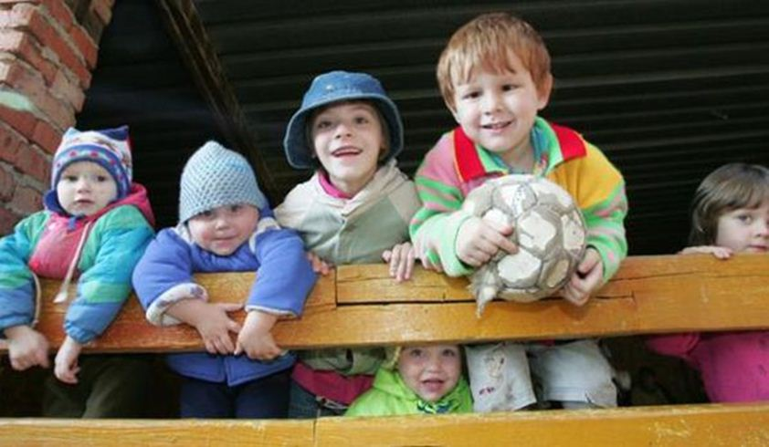
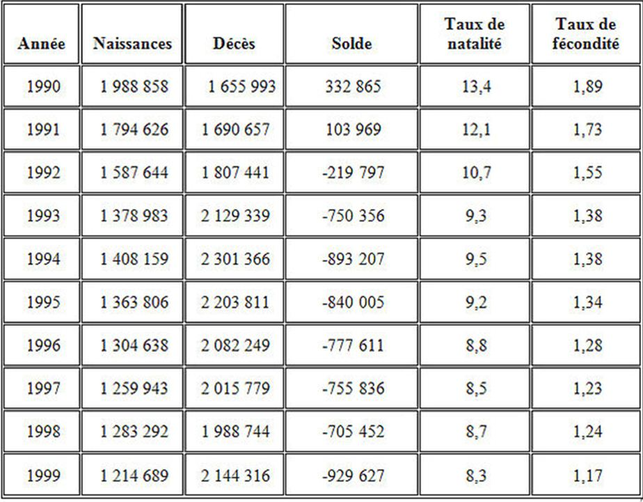
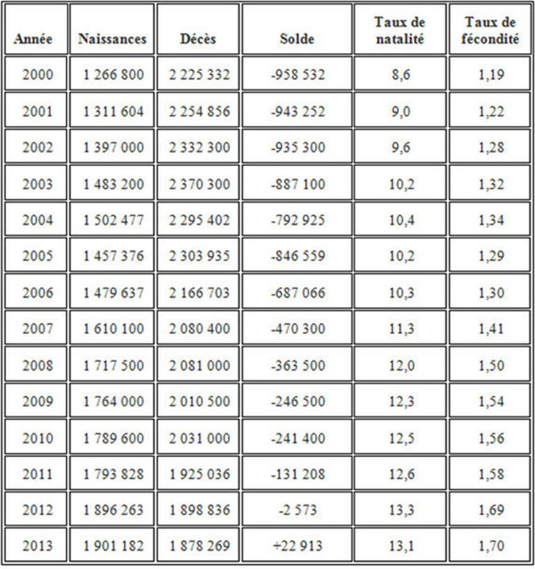
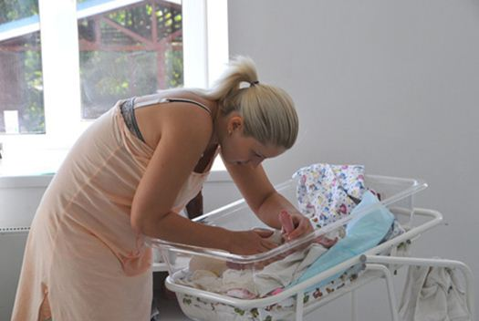
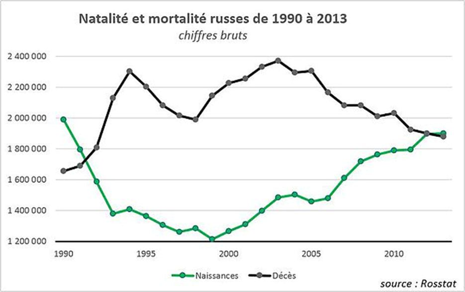
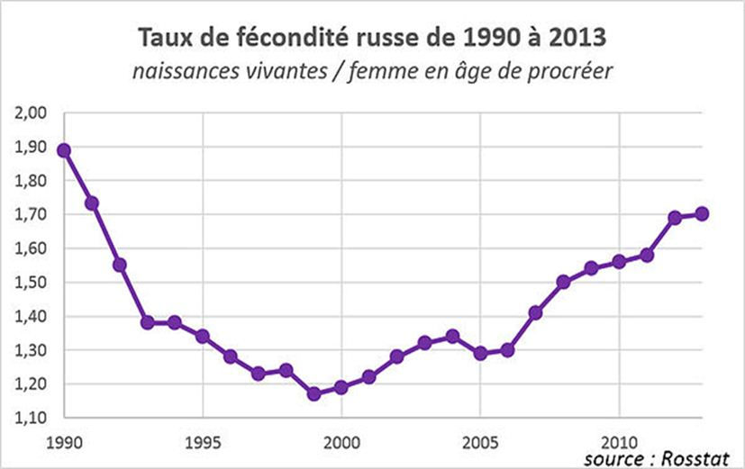
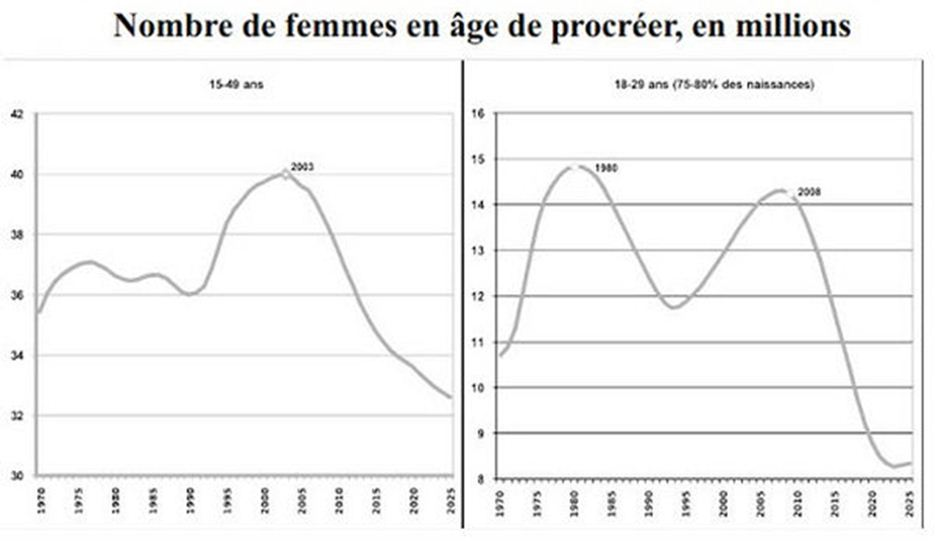
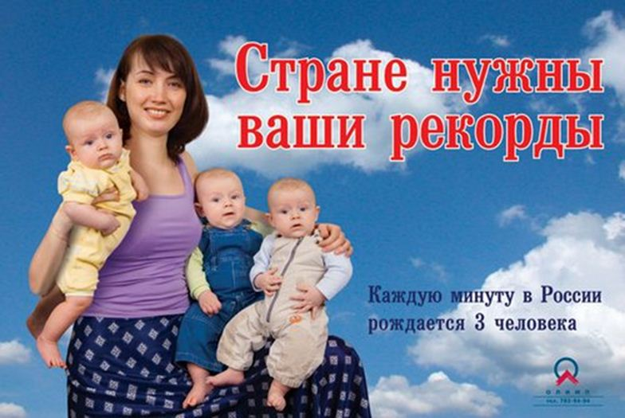
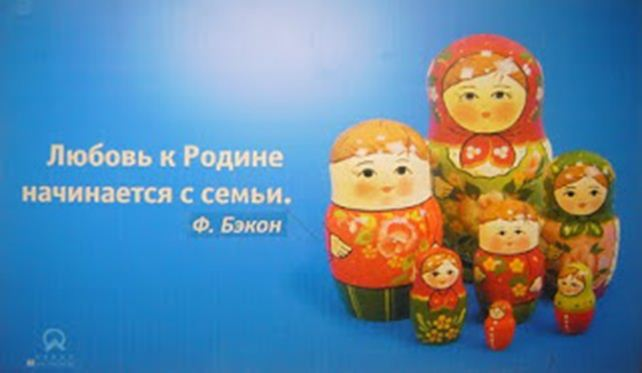

Le thème de la démographie russe a durant la première décennie de notre siècle considérablement porté atteinte aux trop rares prévisions stratégiques qui accompagnaient avec optimisme le redémarrage économique du pays. La très large majorité des experts et analystes se sont en effet et jusque récemment engouffrés dans une analyse prévisionnelle catastrophiste envisageant un effondrement démographique devant mettre à mal l’existence même de la Russie.
1991 – 1999 : l’effondrement
Le pays, il est vrai, a cependant traversé une crise démographique d’une violence sans équivalent historique en temps de paix, crise déclenchée par l’effondrement économique qui suivit la fin de l’Union soviétique lors de la période dite de transition vers l’économie de marché. C’est la décennie de la faillite de l’économie et de la crise morale de la société russe. La désorganisation du système de santé soviétique provoque l’explosion de la mortalité infantile et la réapparition de maladies qui n'existaient même plus dans nombre de pays du tiers monde (diphtérie, typhus, choléra, fièvre typhoïde, tuberculose). Le désarroi social se traduit par une forte croissance de la consommation de drogues et l’augmentation des cas de sida. L’effondrement du niveau de vie des retraités entraîne une augmentation importante de la mortalité des personnes âgées. L’implosion économique va avoir une conséquence démographique directe se traduisant, de 1991 à 1999, par un effondrement du nombre de naissances et une hausse du nombre de décès.
En 1999, la population de la fédération de Russie a diminué de près d’un million d’habitants tandis que le taux de fécondité n’était plus que d’1,17 enfant par femme, soit l’un des plus bas de la planète. C’est à cette époque que les pronostics démographiques les plus pessimistes vont apparaitre. La CIA en 2001 envisageait (1) par exemple que la population de la fédération de Russie ne se situe entre 130 et 135 millions d’habitants en 2015. En 2002 le pourtant très sérieux institut Robert Schuman (2) estimait lui que : « Dès 2015, le nombre de jeunes entre 15 et 24 ans devrait être réduit de moitié (…) Obligeant l’armée russe à repenser l'ensemble de ses pratiques ». Toujours selon l’institut : « A l'horizon 2050, selon le scénario le plus dramatique, la population du pays pourrait décroître de 47 %, pour atteindre à cette date 77,2 millions d'individus (…) Un scénario plus optimiste permettrait de limiter l'érosion démographique à une perte de 30 %, laissant à la Russie une population de 101,9 millions d'habitant en 2050 ».
1999 – 2014 : le redressement
Pourtant, des 1998 et la crise économique que le pays connu, la situation commença à s’améliorer sur le plan économique et donc directement psychologique. Le retour d’une très timide confiance au sein des ménages russes contribua sans doute au redressement démographique qui suivi la pré-stabilisation économique que le pays commença à connaitre. Cette tendance s’accentua au cours de la première décennie du 21ieme siècle alors que les effets d’une gouvernance adéquate permis :
Le retour de la stabilité et de la croissance et par conséquent l’amélioration du niveau de vie.
Un redressement moral qui accompagna le redressement économique en ayant pour conséquence directe de provoquer le désir et le besoin de faire des enfants.
La mise en place d’une très forte politique nataliste promouvant la famille traditionnelle et le développement d’une batterie de mesures (financières, juridiques …) pour inciter les femmes à faire des enfants.
Le résultat obtenu fut largement supérieur à ce qui était escompté par les autorités russes. En 2013, pour la première fois depuis 1991 la population ne diminua pas mais augmenta naturellement, le nombre de naissances dépassant celui des décès de 22.913 habitants.

Graphique : Wineyardaker (3)
2014 devrait également voir une légère augmentation naturelle de population puisque sur les 8 premiers mois de l’année le pays a connu (4) 1.288.678 naissances soit 15.130 naissances de plus que sur les 8 premiers mois de 2012, soit une hausse de 1,2 %. Sur la même période le pays a connu 1.273.603 décès soit 9.382 de moins que l’an passé. Résultat des courses la population russe a depuis le 01 janvier 2014 augmenté naturellement de 15.074 habitants.
Après avoir atteint un plancher à moins de 1,2 à la fin des années 90, le taux de fécondité russe est lui remonté à un peu plus d’1,7 en 2012, ce qui est tout de même supérieur à la moyenne de l’Union européenne (1,6) et place la Russie au même niveau que certains pays européens tel que le Danemark ou bien encore la Hollande mais devant des pays comme l’Ukraine, la Pologne (1,3) ou encore l’Allemagne (1,4).

Graphique : Wineyardaker (3)
Et après ?
Ces résultats sont d’autant plus inattendus et encourageants que la crise financière mondiale aurait pu porter un coup à la confiance des ménages et donc à la volonté de faire des enfants. En outre dès 2008, pour des raisons démographiques structurelles le nombre de femmes des classes d’âge faisant le plus d’enfants en nombre a commencé à numériquement diminuer.
Bien sûr, la crise démographique russe est loin d’être réglée et le creux des naissances des années 1995-2005 se fera inévitablement sentir lorsque ces classes d’âges seront en âge de se reproduire. Comme, en moyenne, la femme russe porte son premier enfant vers l’âge de 30 ans, il faut s’attendre à une très forte baisse de la natalité entre 2020 et 2030, 2035.

« Le pays a besoin de votre record, chaque minute 3 individus naissent en Russie»
A cette fin trois scénarios démographiques (5) ont été envisagés par les autorités russes pour gérer les 15 prochaines années et la réduction inévitable du nombre de naissances auquel le pays fera face. Ces scenarios envisagent différents ratios naissances/décès/immigration et sont mis à jour chaque année en fonction des résultats démographiques annuels que le pays connait.
Le scénario bas envisage une population de 143.464.600 habitants au 01/01/2015 et 131.862.200 personnes en 2030 (la précédente prévision de 2006 envisageait 128.000.000 habitants en 2030). Selon ce scénario la population diminuera naturellement de 500.000 habitants dès 2016 et d’un million dès 2025. Ce scénario s’accompagnerait d’une immigration d’à peu près 250.000 personnes jusqu’en 2030 ne pouvant donc empêcher la diminution globale de la population russe.
Le scénario médian envisage une population de 143.815.000 habitants au 01/01/2015 et 141.612.000 personnes en 2030 (contre 139.372.000 habitants en 2030 pour la précédente prévision de 2006). Selon ce scénario la population diminuera naturellement de 200.000 habitants dès 2016 et d’à peu près 500.000 dès 2025. Ce scénario s’accompagnerait d’une immigration d’entre 350 et 380.000 personnes jusqu’en 2030 ne compensant plus la diminution de population à partir de 2022.
Le scénario haut envisage une population de 144.115.700 habitants au 01/01/2015 et 151.229.100 habitants en 2030, contre 148.000.000 en 2030 selon la précédente prévision de 2006. Selon ce scénario la population augmentera naturellement de plus de 100.000 habitants jusque 2021 et ne redeviendra qu’à partir de 2026. Ce scénario s’accompagnerait d’une immigration d’à peu près 500.000 personnes jusqu’en 2030 permettant a la population d’augmenter d’autant.
La Russie se situe actuellement « théoriquement » à mi-chemin entre les scénarios moyens et hauts. Théoriquement car si l’on ne prend pas en compte le rattachement de la Crimée qui n’était pas inclus dans ces statistiques démographiques prévisionnelles. La population a en effet atteint 143.666.931 d’habitants au 01/01/2014 et devrait vraisemblablement (via une hausse naturelle de population d’à peu près 35 ou 40.000 habitants en 2014 et une immigration de 250.000 personnes) atteindre 144 millions d’habitants soit à mi-chemin entre les prévisions moyennes (143.815.000) et hautes (144.115.700) pour la même année. Pour autant la population devrait sans doute recommencer à naturellement diminuer à l’horizon 2017, 2018 en restant largement compensée par l’immigration (si celle-ci reste stable) et ce jusque 2030.
Ces chiffres sont néanmoins à prendre en compte avec le rattachement de la Crimée qui a ajouté près de 2 millions d’habitants à la population de la fédération de Russie, permettant à celle-ci de se monter à 146,1 millions d’habitants au 01/08/2014.
Il est intéressant de noter que la plupart des « experts » n’ont toujours pas pris en compte ce redressement démographique russe, pas plus visiblement que les conseillers du président américain Barack Obama qui le 3 août (6) dernier affirmait dans une grande interview à la presse américaine que « La population russe déclinait et que (…) peu d’immigrés allaient travailler à Moscou (…) Ou encore que … l’Esperance de vie en Russie des hommes était de 60 ans » !
Un comble lorsque l’on sait que la population russe ne décline en réalité plus depuis 2009, que Moscou est sans doute la ville du continent qui connait la plus forte immigration de travail sur les 15 dernières années (7) et que l’espérance de vie n’est pas de 60 ans mais d’un peu plus de 65 ans en 2013 (dont 76 ans pour le femmes (8) et devrait atteindre 72 ans en 2020.

« L’amour de la patrie commence avec une famille. »
Le rôle de l’immigration
Contrairement à ce que laisse entendre le président américain, la Russie est en effet un pays d’immigration qui a un solde migratoire très positif.
Dès la fin de l’Union Soviétique de très importants flux migratoires vont en effet se manifester. Entre 1990 et 1999 le pays connaitra une forte immigration (7.650.927 personnes dont majoritairement des russes qui résidaient en union soviétique hors territoire de la fédération de Russie) et 4.207.605 émigrants (9).
A partir des années 2000, le flux de russes de l’ex Union Soviétique qui rentre en Russie va diminuer et l’immigration de résidence également, se stabilisant a autour de 250.000, 300.000 entrées par an tandis que les sorties définitives du territoire vont-elles constamment diminuer (10), se stabilisant autour des 40.000 / an.
Au cours de la même période l’immigration provisoire et économique augmentera elle fortement, drainée par la croissance forte que le pays connaitra de 2000 à 2008 le pays comptant en permanence, et ce depuis le milieu des années 2000, entre 10 et 13 millions d’étrangers sur son territoire ce qui fait d’elle le deuxième pays au monde qui accueille le plus grand nombre d'immigrés après les Etats-Unis.
Les récents et tragiques évènements en Ukraine laissent penser que la pression migratoire en provenance d’Ukraine devrait au cours des prochaines années perdurer et sans doute s’accentuer, confirmant le statut attractif de la Russie au sein de l’ex monde-soviétique.
L'importance de la croissance
En restant en bonne santé économique, la Russie peut continuer à maintenir son solde démographique positif et par conséquent compenser l’inévitable baisse démographique à laquelle elle fera face à l’horizon 2020. En restant attractive sur le plan économique et civilisationnelle elle peut aussi et surtout se permettre de trier son immigration en procédant par exemple a une immigration sélective et choisie a même de ne pas déstabiliser culturellement l’équilibre humain de la fédération de Russie, dans le cas bien sûr ou les flux migratoires devraient augmenter en volume.